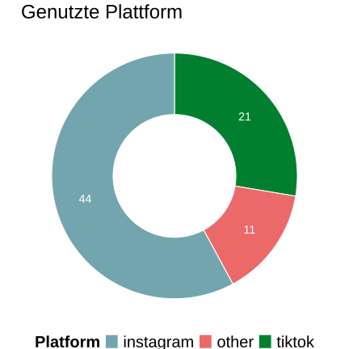

H1: Personen hinterfragen, ob Content von Menschen, oder von KI generiert wurde.
H2: Wenn Personen nicht mehr sicher sind, ob Content von einem Menschen oder KI generiert wurde, achten sie mehr auf Kontext-Informationen, und weniger auf den Inhalt des Content.
Zusammenfassung: Resultate
Teilnehmende: \(n = 82\)
aus der Vorlesung: \(n = 42\)
von zu Hause: \(n = 15\)
Erhebungszeitraum: 12. Dezember - 15. Dezember
Plattformen

\(n_\text{TikTok} = 21\)
\(n_\text{Instagram} = 44\)
\(n_\text{other} = 11\)
Was geht Ihnen durch den Kopf, wenn Sie Social Media scrollen?